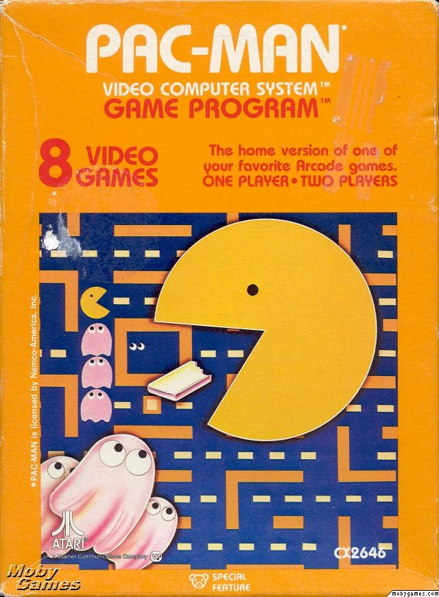
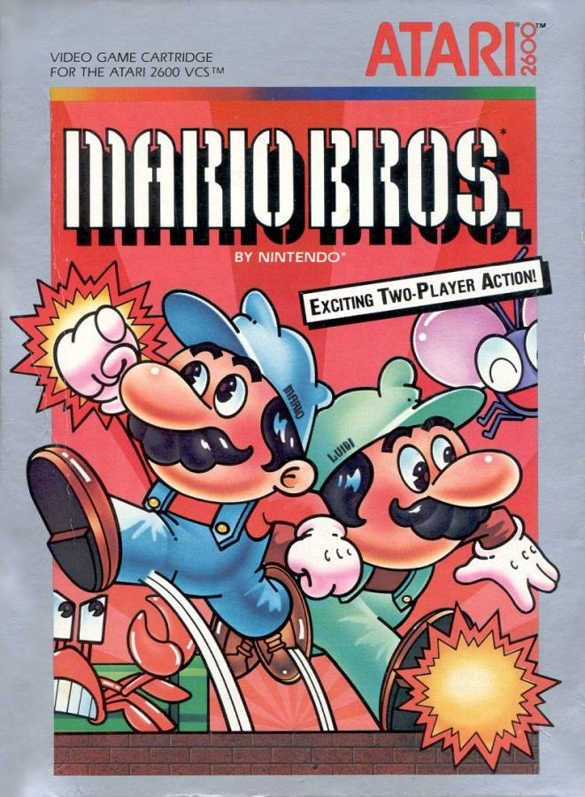
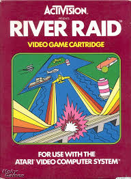

Videogames
História dos Videogames
A jornada dos videogames começou de forma modesta nos anos 70, quando o
sucesso estrondoso de Pong nos arcades provou que havia um público para o entretenimento interativo.
Logo em seguida, o Atari 2600 levou essa magia para as salas de estar, estabelecendo o mercado de
consoles domésticos. A década de 80 foi um período de extremos: após uma crise que quase dizimou a
indústria, a Nintendo a revitalizou com o lançamento do NES e do revolucionário Super Mario Bros.

Os jogos do Atari 2600 eram marcados pela simplicidade gráfica e sonora,
focando em jogabilidade viciante e na busca por recordes em vez de finais.
Ele popularizou os videogames em casa com clássicos como Pitfall!, River Raid e adaptações de arcade
como Space Invaders.
Apesar de um excesso de jogos de baixa qualidade ter contribuído para a crise de 1983, seu legado
foi crucial para definir a indústria de games.
Alguns jogos Do Atari 2600



Empresas Atual de videogames
Playstation
A história da PlayStation nasceu de uma parceria rompida com a Nintendo, levando a Sony a criar seu próprio console. O PS1 revolucionou a indústria nos anos 90 com gráficos 3D e jogos em CD, mirando um público mais adulto. O PS2 se tornou o console mais vendido da história, funcionando também como um popular leitor de DVD. Após um início difícil, o PS3 se recuperou com o Blu-ray e exclusivos aclamados como The Last of Us. O PS4 dominou sua geração com foco total nos jogadores e uma biblioteca de jogos fenomenal.